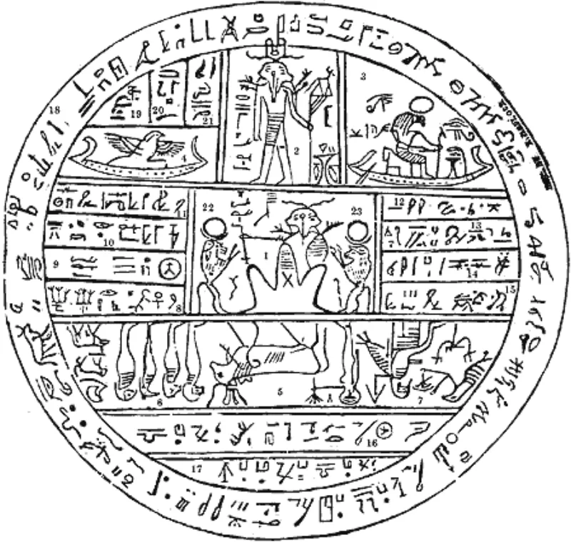

Don't say Mormons get their own planet
Don't useThe LDS answer holds up. Do not lead with this one.
The phrasing to stop using
That good Mormons each get their own planet when they die.
Why it backfires
The 2014 essay Becoming Like God loaded the rebuttal in advance. It says exaltation gets "reduced in media to a cartoonish image of people receiving their own planets." A church FAQ answers the planet question with a flat no.
Say it and your friend hands you the essay.
But the kernel is real
And the church affirms it. Exaltation means becoming gods.
D&C 132:20 says "then shall they be gods." It includes eternal increase and a share in creation. Past leaders said it in cosmic terms — Lorenzo Snow, Brigham Young, and Spencer W.
Kimball, who spoke of creating worlds. Moses 1:33 has worlds without number.
Use their words, not South Park's
Quote D&C 132:20 and set Isaiah beside it. Isaiah 43:10 — "before me there was no God formed, neither shall there be after me." Isaiah 44:6-8 says the same.
How strong is this argument?
Do not use the phrase. The doctrine underneath it is fully conceded, so the only error is the packaging.
Fixing the packaging is free. The exaltation case on this site carries the full argument.
What to say
"Your scripture says the exalted shall be gods. Isaiah says none will be formed after him.
Can both be true?"


How they answer this — at its strongest
The 2014 essay calls that a cartoon, and a church FAQ answers it with no.
The church's 2014 essay pre-loaded the rebuttal. Exaltation, it says, is 'reduced in media to a cartoonish image of people receiving their own planets'. A church FAQ answers the planet question with 'No'.
Say 'own planet' and the member hands you the essay.
The kernel, though, is strong and church-affirmed. Exaltation means becoming gods. D&C 132:20 says 'then shall they be gods', with eternal increase and a share in creation. Past leaders taught it in exactly cosmic terms. Lorenzo Snow. Brigham Young. And Spencer W. Kimball's 'we shall create worlds'.
The verdict
Do not use the phrase: the doctrine is conceded, so only the wording is wrong.
This is the rare warning case where the doctrine underneath is fully conceded. The error is purely in the packaging.
'Own planet' is South Park vocabulary, and the church has explicitly framed it as caricature. Using it triggers the scripted deflection and skips the real conversation.
Use the member's own words instead. Your scripture says the exalted shall be gods, at D&C 132:20. Isaiah 43:10 says 'before me there was no God formed, neither shall there be after me'. Can both be true?
The exaltation case on this site carries the full argument.
Sources
- Gospel Topics essay: 'Becoming Like God'
- Salt Lake Tribune coverage of the essay
- MormonThink: response to 'Becoming Like God'
- MRM: Gospel Topics essay 'Becoming Like God'